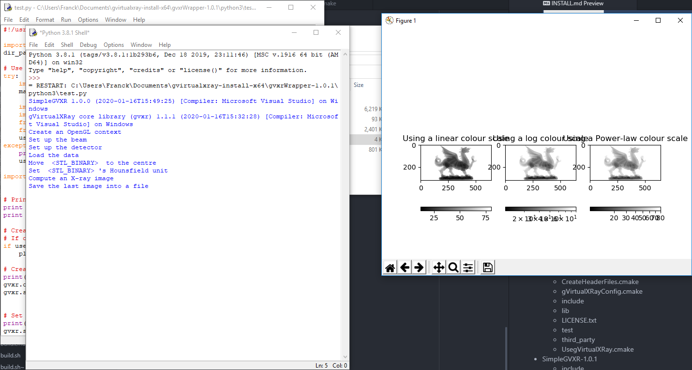
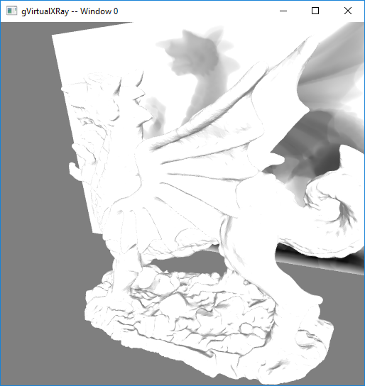
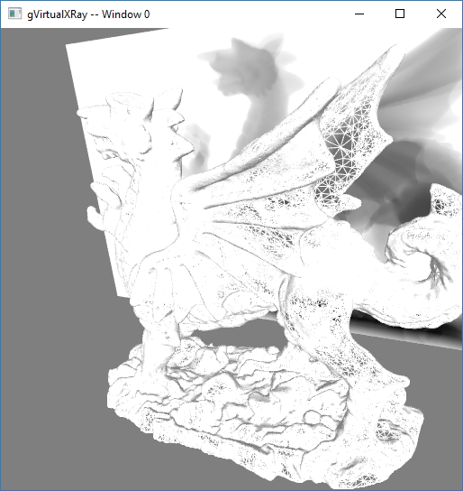

6th Jul 2021
Make sure you have:
The examples below are for openSUSE Leap but you can adapt them for your own distro.
$ sudo zypper in cmake-full gcc-c++ $ sudo zypper in libX11-devel \
libXi-devel \
libXcursor-devel \
libXinerama-devel \
libXrandr-devel \
libXxf86vm-devel \
glu-devel $ sudo zypper in Mesa-libEGL1 Mesa-libEGL-devel libgbm1 libgbm-devel $ sudo zypper in swig \
ruby-devel \
tcl-devel \
python3 python3-devel \
java-11-openjdk \
octave-devel \
R-core R-base R-core-devel R-base-devel $ xcode-select --install command.Assuming the system is ready.
sudo make rather than make in Steps 5 and 6. In the example below, I install it in my home directory in gvxr-install. $ export GVXR_INSTALL_DIR=$HOME/gvirtualxray-install $ mkdir ~/gvxr
$ cd ~/gvxr $ wget https://sourceforge.net/projects/gvirtualxray/files/1.1/gVirtualXRay-1.1.5-Source.zip/download
$ mv download gVirtualXRay-1.1.5-Source.zip
$ unzip gVirtualXRay-1.1.5-Source.zip $ mkdir gvxr-bin
$ cd gvxr-bincmake, ccmake or cmake-gui depending on you preferences. ccmake and cmake-gui are interactive.
cmake: $ cmake \
-DCMAKE_BUILD_TYPE:STRING=Release \
-DCMAKE_INSTALL_PREFIX:STRING=$GVXR_INSTALL_DIR \
-DBUILD_TESTING:BOOL=ON \
-DBUILD_WRAPPER_CSHARP:BOOL=ON \
-DBUILD_WRAPPER_JAVA:BOOL=ON \
-DBUILD_WRAPPER_OCTAVE:BOOL=ON \
-DBUILD_WRAPPER_PERL:BOOL=ON \
-DBUILD_WRAPPER_PYTHON3:BOOL=ON \
-DBUILD_WRAPPER_R:BOOL=ON \
-DBUILD_WRAPPER_RUBY:BOOL=ON \
-DBUILD_WRAPPER_TCL:BOOL=ON \
-S .. \
-B $PWDccmake: $ ccmake \
-DCMAKE_BUILD_TYPE:STRING=Release \
-DCMAKE_INSTALL_PREFIX:STRING=$GVXR_INSTALL_DIR \
-S .. \
-B $PWDcmake-gui: $ ccmake \
-DCMAKE_BUILD_TYPE:STRING=Release \
-DCMAKE_INSTALL_PREFIX:STRING=$GVXR_INSTALL_DIR \
-S .. \
-B $PWD $ make -j16I used a parallel build with 16 jobs as I got 16 cores in my CPU. Adjust -j depending on your computer. Once the project is made, it is also installed. 7. Run the unit tests (optional)
$ make test $ make installor at your own risk as root using:
$ sudo make installIf you built the python wrapper, add its path to PYTHONPATH:
$ PYTHONPATH=$GVXR_INSTALL_DIR/gvxrWrapper-1.0.5/python3:$PYTHONPATHAnd to make it permanent:
$ echo "" >> $HOME/.bashrc
$ echo "################################################################################" >> $HOME/.bashrc
$ echo "# Install gvxrPython3 in PYTHONPATH" >> $HOME/.bashrc
$ echo export PYTHONPATH=$GVXR_INSTALL_DIR/gvxrWrapper-1.0.5/python3:\$PYTHONPATH >> $HOME/.bashrc
$ echo "################################################################################" >> $HOME/.bashrcexport GVXR_INSTALL_DIR=$HOME/gvirtualxray-install
mkdir ~/gvxr
cd ~/gvxr
wget https://sourceforge.net/projects/gvirtualxray/files/1.1/gVirtualXRay-1.1.5-Source.zip/download
mv download gVirtualXRay-1.1.5-Source.zip
unzip gVirtualXRay-1.1.5-Source.zip
mkdir gvxr-bin
cd gvxr-bin
cmake \
-DCMAKE_BUILD_TYPE:STRING=Release \
-DCMAKE_INSTALL_PREFIX:STRING=$GVXR_INSTALL_DIR \
-DBUILD_TESTING:BOOL=ON \
-DBUILD_WRAPPER_CSHARP:BOOL=OFF \
-DBUILD_WRAPPER_JAVA:BOOL=OFF \
-DBUILD_WRAPPER_OCTAVE:BOOL=OFF \
-DBUILD_WRAPPER_PERL:BOOL=OFF \
-DBUILD_WRAPPER_PYTHON3:BOOL=ON \
-DBUILD_WRAPPER_R:BOOL=OFF \
-DBUILD_WRAPPER_RUBY:BOOL=OFF \
-DBUILD_WRAPPER_TCL:BOOL=OFF \
-S .. \
-B $PWD
make -j16
make test
make install
export PYTHONPATH=$GVXR_INSTALL_DIR/gvxrWrapper-1.0.5/python3:PYTHONPATH
echo "" >> $HOME/.bashrc
echo "################################################################################" >> $HOME/.bashrc
echo "# Install gvxrPython3 in PYTHONPATH" >> $HOME/.bashrc
echo PYTHONPATH=$GVXR_INSTALL_DIR/gvxrWrapper-1.0.5/python3:\$PYTHONPATH >> $HOME/.bashrc
echo "################################################################################" >> $HOME/.bashrcI recommand to use 64 bits for all the components, including for Python 3.
Configure. There’ll be an error, but don’t worry about it.install.CMAKE_INSTALL_PREFIX into a path where you are allowed to write. Click on configure. If it does not work, change the path and make sure you have write privilege for that path.BUILD and tick the right option(s) (in my case BUILD_PYTHON£_WRAPPER). Now you can click on Configure, then Generate, then Open Project.BUILD_ALL or press the F7 key to build the project.========== Build: 4 succeeded, ...On Windows, you Should see 4 or 5 directories in the installation directory depending on wrappers:
On Unixes, you Should see 3 or 4 directories in the installation directory depending on wrappers:
gvxrWrapper-1.0.5/python3, The X-ray image is displayed using linear, log and power law colour scales using Matplotlib.
<Q> to close this window and the real-time viewer will open:
<B> to hide/show the X-ray beam:<W> to view the 3-D object in solid/wireframe mode:
<N> to display the X-ray image in negative or positive and <H> to hide/show the X-ray detector.<Q> or <ESC> to exit. When the script ends, there’ll be two new files:xray_image-0.mha: contains the X-ray image. MHA fies can be viewed with the popular scientific image viewer tool ImageJ/Fiji.lbuffer-0.mha: contains the length of X-rays crossed in the 3-D object.